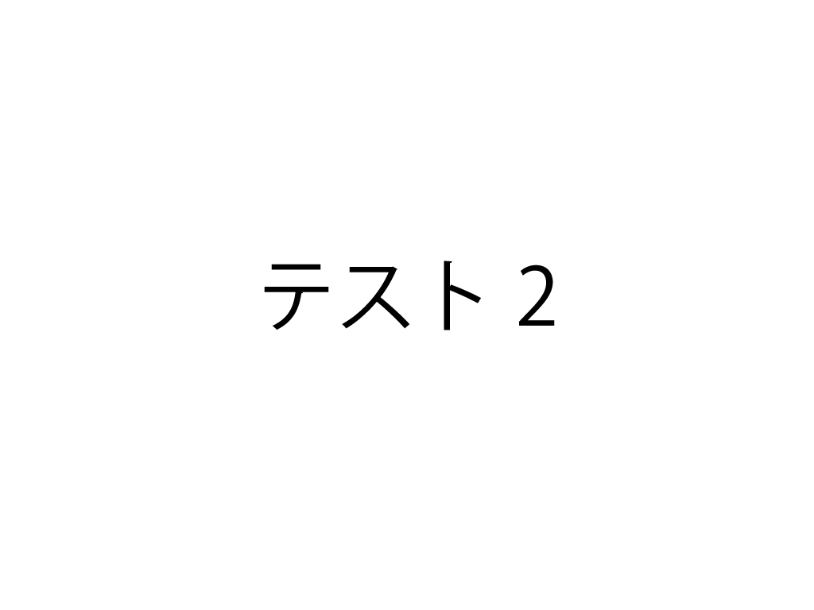

1.サンプルをダウンロード
XBPのHPの構成
ブートキャンプで作成したホームディレクトリのXBPフォルダはこのような構造になっています。

デザイン演習Ⅰ・Ⅱの中を編集していきます。
２.テストページを編集してみる
test.htmlを編集していきます
①文字を書く
■work1:test.htmlに文字を書いてみましょう。
段落など、塊ごとにdivタグで括るようにして、文字を書いていきましょう。
divはdivision（分割）の略です。
<div>
ああああああ
</div>
②画像の挿入
■work2:test.htmlにimagesフォルダにあるtest.pngを挿入してみましょう
画像の表示にはimgタグを使います。（imageの略）
imgタグのsrcという属性にファイルパスを記載します。(srcはsourceの略です)
width属性は幅を設定します。%で指定するとスクリーンに対して何%の幅にするかを指定できます
【書き方】
画像を表示(30%)<br>
<img src="images/image1.png" width="30%"><br>
画像を表示(40%)<br>
<br>
画像を表示(30%)

画像を表示(40%)
注意：携帯で撮影した写真はすごくサイズが大きいので今後写真をGitHubにプッシュする場合は写真のサイズを落としてください。
Macでの写真サイズの変更方法(
doyolab)
Windowsでの写真サイズの変更方法(
外部サイト)
③箇条書き
■work3:test.htmlに何か箇条書きをしてみましょう
番号付きの箇条書きはolタグ(ordered listの略です)
各項目はliタグで括ります（listの略です)
【書き方】
<ol>
<li>ああああああ</li>
<li>いいいいいい</li>
</ol>
【結果】
- ああああああ
- いいいいいい
番号なしの箇条書きはulタグ(Unordered listの略です)
【書き方】
<ul>
<li>あああああ</li>
<li>いいいいいいい</li>
</ul>
【結果】
④リンク
■work4:test.htmlに外部サイトへのリンクを作成してみましょう。
リンクを作りたい時はaタグを使います(Anchorの略です)
href属性にリンク先を記載します(hypertext referenceの略です)
target属性に_blankを設定すると新しいタブでリンクが開きます。設定しないと、同じタブ
【書き方】
<a href="index.html">トップページへ</a><br>
<a href="https://www.yahoo.co.jp/" target="_blank">Yahoo</a>
【結果】
トップページへ→同じ階層（フォルダ）にあるindex.htmlに移動
Yahoo→新しいタブでyahooを開く
⑤タイトル
■work5:test.htmlのheadの部分のtitleを自分なりのタイトルに変更してみましょう。
【書き方】
<title>XBPのページ</title>
【結果】
ブラウザのタブの表示を確認してください。
⑥スタイルシートの設定
■work6:headの部分でcssフォルダにあるstyle.cssをスタイルシートに設定してみましょう。
h1.htmlからある行をコピペしてくればOKです
cssファイルはhtmlのいろんな書式を決めておいて、それを読み込めばタグごとの書式が反映されるファイルです。
スタイルシートの読み込みがうまくいけば、test.htmlの背景や右側の余白が整うはずです。
<link rel="stylesheet" href="css/style.css">
【結果】
背景や右側の余白が整うはずです。
宿題
次回授業までの宿題
■1.htmlというファイルを作ってください（test.htmlをコピーすると簡単です。)
■1.htmlに一回目の授業のポイントをできるだけ詳細にまとめてください。
（やったことは必ず忘れるので、自分で見返してわかるように）
■de12フォルダの直下にあるindex.htmlの演習ノートの下に番号なし箇条書きで、「第1回」と記述し、1.htmlにリンクさせてください。
■GitHubにプッシュしてください。
完成イメージはこのような感じです。